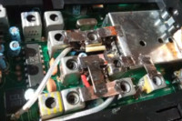

Юр. лицам.
Консультации
Оценка себестоимости ПП
Подбор взаимозаменяемых электронных компонентов
Приобретение электронных компонентов и модулей.
Прошивка микроконтроллеров
Разработка печатных плат
Разработка программ для микроконтроллеров AVR
Разработка электрических схем
Ремонт электроники промышленного оборудования
Сборка и отладка разработанного изделия
Участие в проведение испытаний
Участие в научно исследовательских работах
Физ. лицам.
Компьютерная диагностика автомобилей.
Настройка компьютеров
Настройка радиостанций
Настройка антенн
Радиоизмерения
Ремонт радиостанций
Ремонт электроники
Услуги электрика
Интернет-магазин
Аккумуляторы
Антенны
Программаторы
Радиостанции
Тангенты
АВТОМОБИЛЬНАЯ ЭЛЕКТРОНИКА

Ремонт блока управления VOLVO

Доработка Delphi DS100

Ремонт EBS грузового автомобиля
Адаптивное освещение автомобиля
Сигнализация с обратной связью на 433 МГц
ТОПЛИВНАЯ СИСТЕМА АВТОМОБИЛЯ
DX-РАДИОСВЯЗЬ
Дальний прием на 15 канале в CB МГц.
Дальний прием на частотах 27 МГц и 88-108 МГц.
Почему нет приема на ДВ, СВ и КВ в городе?
Что можно услышать ночью на ДВ и СВ?
Зачем согласовывать антенну с входом приемника?
РАДИОСВЯЗЬ

Доработка Grundig YB400

Автоинформатор + ЭХО репитер

Автоинформатор для радиостанции V3
Снижение собственных шумов у приемника радиостанции
Разработка фильтра ПЧ 10.7 МГц для приемника радиостанции
Раскрытие радиостанции TH-9800 c 14 МГц до 1000 МГц.
КОМПЬЮТЕРЫ
Увелечение обьема памяти у ноутбука.
Распаяка SSD-разьма для установки диска в ноутбук.
Сравнение Xiaome Readme Note 6 PRO с VIVO Y31
АУДИОТЕХНИКА

УНЧ с полосой пропускания до 470 кГц.

Активно и пассивная аудио колонка.
ИСТОЧНИКИ
Источник с низким уровнем излучения электромагнитных помех.

Испытание импульсного блока питания на ЭМС.
Ремонт ИБП мощностью 1кВт.
ПРОЧЕЕ

Программируемый регулятор температуры для паяльника 12В
Программируемый аттенюатор до -31 Дб до 3 ГГц.